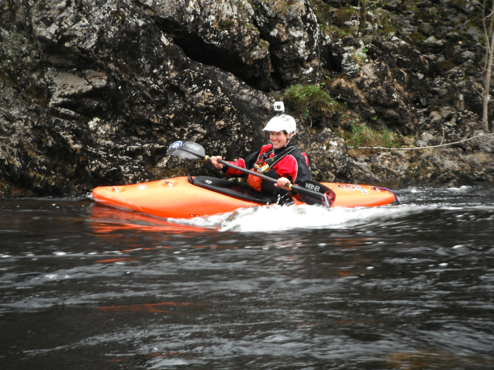

After the long drive yesterday, today we hit the first river off the trip the River Loche. Although you would think the rivers would have had enough of driving following the 100's of miles covered yesterday, everyone seemed to enough the rally stage like road which takes you to the get on, the single track making a nice change to the motorway and A roads everyone had been traveling on yesterday.

This river was a gentle start to the trip, with the river being mostly flat. It was also our first opportunity to paddle as a group, and see how everyones paddling was, as well as get comfortable in our boats. The river has only one small feature, but more than enough to keep everyone entertains in the small feature that is half way down the river.